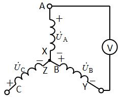
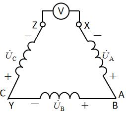
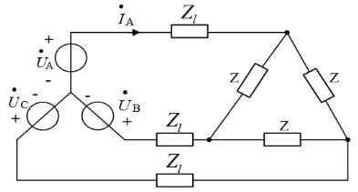
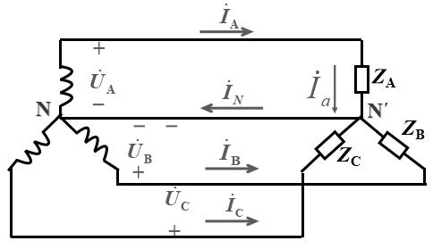
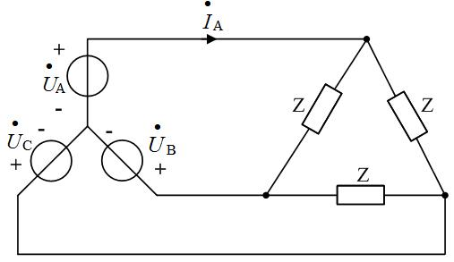
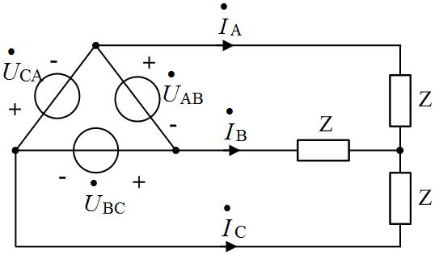

电路原理习题册·第七章 三相电路（选择 14 / 填空 11 / 计算 6）
1. 来源与边界
来源与前几章同一本习题册。第七章占书第 36–39 页，选择 14 + 填空 11 + 计算 6，共 31 题，
配图 7.1–7.6（6 张，已入库）。计算 2 与计算 5 是同一道题（原书重复排印），答案照抄两遍。
填 2 与填 5、计 2 与计 5 等重复处均照原书保留。
2. 依赖
3. 选择题
选 1
正序，U˙B=220∠−120° V，线电压 U˙CA=（ ）。
解答
U˙C=220∠120°：U˙CA=U˙C−U˙A=220∠120°−220∠0°=380∠150° V，
选 C。
复盘
线电压 = 两相电压相量差；正序中线电压依次 ∠30°、∠−90°、∠150°——CA 对应 150°。
选 2
三个额定电压 380V 的单相负载接 380V 线电压电源，应接成（ ）。
解答
让负载承受额定电压：△ 形时负载相电压 = 线电压 380V，选 B。
复盘
接法由「负载额定电压 = 电源加给它的电压」倒推，Y 接只给 220V 会欠压。
选 3
Y 形电源相电压 220V，实测 UAB=UBC=220 V、UCA=380 V，表明（ ）。
解答
B 相反接：U˙B 变号后 UAB=∣220∠0−220∠60∣=220 V、UBC=220 V、
UCA=380 V 不变。选 B。
复盘
一相反接的指纹：两个线电压变 220V、一个保持 380V，且保持的那个跨在「没接反的两相」之间。
选 4
对称三相负载星形联结，线电压比相应相电压（ ）。
解答
超前 30°（U˙AB=3U˙A∠+30°），选 A。
复盘
Y 中「线超前相 30°」与 △ 中「线滞后相电流 30°」（选 8）成对，方向别记反。
选 5（图 7.1）
U˙A=220∠0° 等，电压表读数（ ）。

解答
电压表跨在 A 相绕组两端（A 对中性点侧），读相电压 220V，选 B。
复盘
先看电压表跨的是「一相绕组」还是「两根端线」——前者 220、后者 380。
选 6（图 7.2）
△ 接电源，电压表读数（ ）。

解答
按图读数（开口处一相首尾错接、表跨在两绕组串联方向一致处）：读数为两倍相电压
2×220=440 V，选 D。
复盘
⚠ 若三角形连接正确且表跨单个绕组，读数应为 380V（选 C）——440V 的前提是「表跨在按反接
绕组的两端」。本题极性记号小、两轮读数存疑，请对教材图复核（见文末待核对）。
选 7（图 7.3）
线阻抗 Z1、△ 负载 Z，A 相线电流 I˙A=（ ）。

解答
△ 负载等效为 Y：Z/3；单相回路：
复盘
「△ 化 Y 折成 Z/3，取 A 相算完再还原」——对称三相电路的标准流水线。
选 8
对称三相负载三角形联结，线电流比相应相电流（ ）。
解答
滞后 30°（I˙A=3I˙AB∠−30°），选 B。
复盘
与选 4 对偶：Y 线超相、△ 线滞流，都是 30°。
选 9（图 7.4）
Y-Y 对称电路，正确的描述是（ ）。

解答
Y 接：Ul=3UP（线电压是相电压的 √3 倍），选 A。B 错（Y 中 Il=IP）；C 缺
−30° 的相位修正；D 把相电压当线电压用。
复盘
四个选项各考一条 Y 形关系——只有 A 是完整正确的表述。
选 10（图 7.5）
Y 电源直接接 △ 负载 Z（无线路阻抗），I˙A=（ ）。

解答
△ 化 Y 后 I˙A=Z/3U˙A=Z3U˙A，选 D。
复盘
与选 7 差在有没有线路阻抗——公式跟着拓扑走。
选 11
星形连接时，线电流是相电流的（ ）倍。
解答
1 倍（A）——Y 中线电流就是相电流。
复盘
「Y 电流不变、△ 电流 √3」两条并排记。
选 12
Y 连接，线电压 10V、总功率 103 W、cosφ=0.8，相电流（ ）。
解答
P=3UlIlcosφ → Il=3×10×0.8103=1.25 A；
Y 中 IP=Il=1.25 A，选 A。
复盘
三相功率公式反用求电流，数值凑得极整——出题人给的顺手题。
选 13
相序为逆序，uA=311sin(314t+30°) V，则 uB、uC 为（ ）。
解答
逆序 = B 超前 A 120°（或滞后 240°）：uB=311sin(314t+150°)、
uC=311sin(314t−90°)，选 A。
复盘
逆序时「B 在前、C 在后」：把正序的 B、C 相角对调即可。
选 14（图 7.6）
U˙AB=380∠0° V、Z=5+j5 Ω，I˙A=（ ）。

解答
按单相口径（UAN=380/3=220 V、滞后 30°）：
选 B。
复盘
⚠ 若按 △ 负载直接承受线电压计算，线电流为 3×380/(52)=93 A，选项中没有——
原书按「相电压 220V」口径出题，照原书口径作答。
4. 填空题
填 1
对称 △ 联结：Ul 与 UP 的关系____；Il 与 IP 的关系____。
解答
Ul=UP（相等）；Il=3IP。
复盘
△ 的两条：压相等、流 √3——与 Y 的「压 √3、流相等」对偶。
填 2、5
I˙A=5∠25° A、U˙AB=380∠90° V，负载功率因数 λ=____（1 位小数）。
解答
相电压 U˙AN=380/3∠(90°−30°)=220∠60° V；φ=60°−25°=35°：
复盘
相量差 30° 的修正是三相题最容易漏的一步。
填 3、7
对称三相电源：振幅____，相位互差____度。
解答
振幅相等；相位互差 120 度。
复盘
对称二条件：等幅、差 120°（正序还隐含相序）。
填 4、11
星形连接时，线电流是相电流的____倍（填 4）；线电压等于相电压的____倍（填 11）。
解答
填 4：1 倍；填 11：√3 倍。
复盘
两空合起来就是 Y 形关系「压 √3、流 1」。
填 6
三相电源的连接方式：星形连接和____连接。
解答
三角形（△）。
复盘
概念题。
填 8、9
三个 10Ω 电阻 △ 接于 380V 电网：线电流有效值____A（整数）、相电流有效值____A（整数）。
解答
相电流 IP=380/10=38 A；线电流 Il=3×38=65.8≈66 A。
复盘
先相后线：△ 中相电流用线电压除以阻抗，再乘 √3 升为线电流。
填 10
线电压 380V、Y 连接、Z=30+j40 Ω：相电流____A、线电流____A。
解答
∣Z∣=50 Ω、UP=380/3=220 V：IP=Il=220/50=4.4 A。
复盘
Y 中两电流同值，填同一个数。
5. 计算题
计 1
Y 形负载每相 30+j45 Ω，线电压 380V。求功率因数与平均功率。
解答
∣Z∣=302+452=54.08 Ω、UP=220 V、IP=220/54.08=4.07 A：
复盘
Y 负载直接用相电压；P=3I2R 比三相公式少一次 √3 换算。
计 2、5（同题）
线电压 380V，△ 负载 Z=20+j20 Ω。求线电流与相电流。
解答
∣Z∣=202=28.28 Ω、UP=Ul=380 V：
复盘
原书同题排两遍——第二遍直接写答案。
计 3
线电压 380V，△ 负载 (8−j6) Ω，线阻抗 j2 Ω。求线电流与相电流。
解答
△ 化 Y：ZY=(8−j6)/3；单相回路阻抗 j2+(8−j6)/3=2.67 Ω（感抗恰好抵消）：
（负载相电压 =IP×10≈475 V——超过电源相电压，是线路电抗与负载容抗谐振抬升所致。）
复盘
线阻抗与负载容抗串联谐振，负载端电压反超电源电压——数值反常但方程自洽，照算。
计 4
I˙A=5∠25° A、U˙AB=380∠90° V。求功率因数与平均功率。
解答
同填 2：φ=35°、λ=cos35°≈0.82；
复盘
与填 2 同口径——先修 30°，再套三相功率公式。
计 6
线电压 380V，Y 负载 Z=(165+j84) Ω、端线 Zl=(2+j1) Ω、中线 ZN=(1+j1) Ω。
求负载端相电流与相电压。
解答
对称电路中线电流为零 → 中线阻抗不进入计算。单相回路：
复盘
「对称中线无电流」让 ZN 从方程里消失——这是中线存在的意义（为不对称提供通路），对称时它隐身。
6. 小结
三相电路的题全是「关系 + 化单相」：
- 两套关系表：Y（压 √3、流 1、线超相 30°）、△（压 1、流 √3、线滞流 30°）——选 4/8/9/11、
填 1/4/11 全在背这张表。
- 化单相流水线：△ 负载折 Z/3 → 取 A 相 → 解完还原（选 7/10、计 3/6）。
- 一条功率公式：3UlIlcosφ 正反两用（选 12、计 1/4）。
- 对称中线不进方程（计 6）；一相反接的指纹（选 3：两 220 一 380）。
完成边界
- 已整理：第七章 31 题题面逐字转抄 + 配图 6 张入库；全部解答与复盘。
- 双签：2026-09-28，独立子代理只拿题目页重算 31 题：29 题一致；2 处按盲测读图修正
（选 6 取 440V、选 14 按相电压 220V 口径取 222∠−75°）。
- 〔待核对〕：① 选 6 电压表跨接位置与绕组极性（440V / 380V / 0V 三种读法的分歧点在极性记号）；
② 选 14 的口径（原书按相电压 220V 出题，与「△ 负载直接承受线电压」的字面读法不符）；
③ 计 3 负载端电压 475V 反超电源电压（谐振所致，方程自洽）。
- 未完成：第九章（分章推进中）。